Two stages system for detection and recognition of vehicular license plates using end-to-end models and synthetic data.
Intituto Tecnológico de Costa Rica required an ALPR due to difficulty of finding parking slots, but it had to be cheap to use propetary hardware. The solution was to train and deploy a custom ALPR. It was designed in two stages to train with few data in comparation of a pure end-to-end model and to compensate lack of data a method of synthetic data generation was proposed.
View Code
STM32 multidevice using Rust's async feature instead of RTOS
This was a very simple example of how to program embedded software in rust embassy. Rust is not just easier than C/C++ to develop high performance and memory safer embedded software, but async feature allow to execute parallel task without RTOS, while at same time results in relative faster programs and smaller programs, if the project do not requieres very large code, in contrary case then RTOS is better for smaller and faster programs.
View Code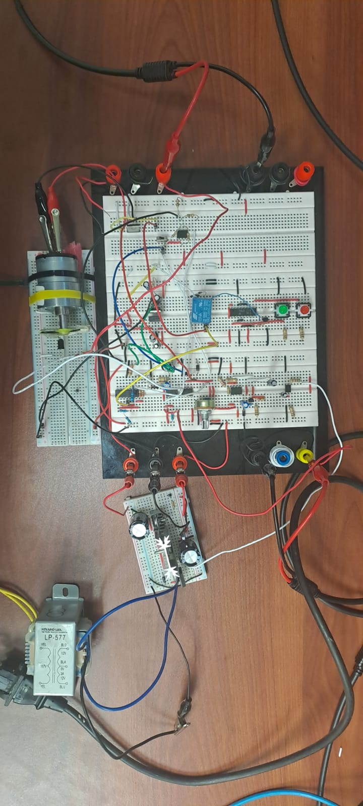
PWM motor speed controller
This project consist in a 12 VDC PWM controlled motor that works in automatic or manual mode. In manual mode speed is controlled just by a potentiomenter so that it can't compensate speed when a load is added to motor, in automatic mode a negative retroalimentation is added so that with a proporcional controller in closed loop motor speed is compensated when a load is added. It also has speed indicator with LEDs, an emergency stop button and PWM signal was generated without integrated circuits.
Read Inform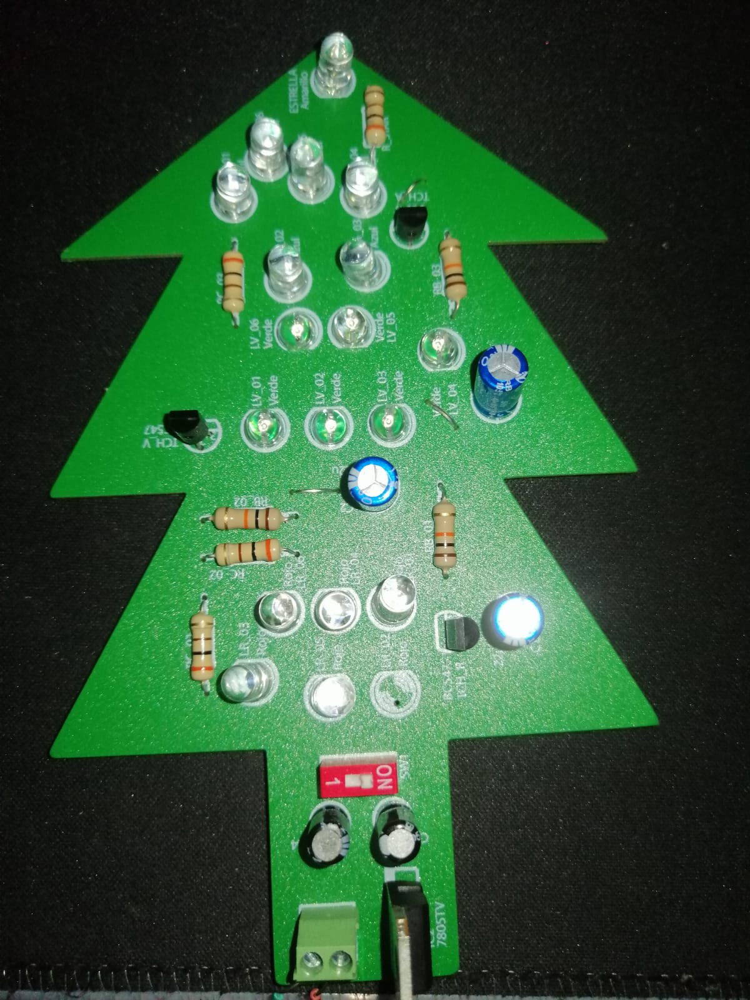
Christmass decoration
This decoration has audio amplifier at discrete level in two stages: Voltage amplifier and power amplifier, and an infrared remote controller to turn on/off lights system, and a light system with astable oscillator, among others components. Everything was assembly into modular PCBs after designs passed simulations performed in Multisim and test were conducted on breadboards. PCBs were designed in Eagle software.
Read Inform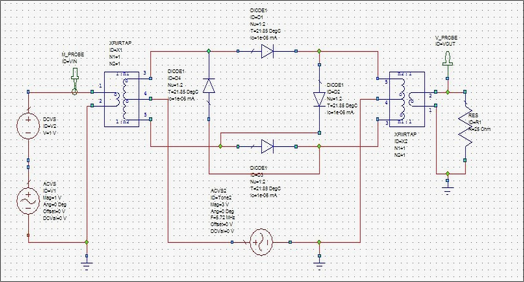
TV signal transmision
A way of that a TV signal could be formed is by a stereo audio and a video, so that to send this signals with an anthena a common aproach is to multiplex them in frequency using AM modulation to order its components in frequency spectrum, then they are mixed it a sumator and finally FM modulation is performed for long transmision. In the receptor this signals are first FM demulated, then frequency demultiplexed using filters and AM demodulation. This is what was done in this project. In the first stage the archiquecture was planed and simulated with Simulink, then in AWR circuit schematic are proposed and simulated. Finally PCBs were designed using KiCad. But circuits were never physically assembled, everything was just simulation.
Read Inform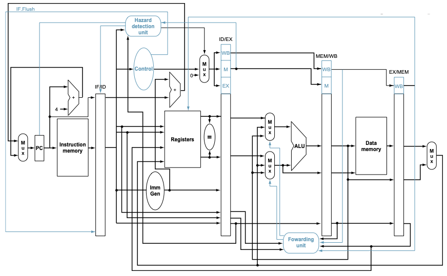
RISC-V microarchitecure in verilog
This is an implementation of RISC-V architecture using Verilog in Xilinx's Vivado software. The microarchitecture is multicicle pipeline, and it includes hazard detection. It was left in simulation stage, and it has non synthetisable modules.
View Code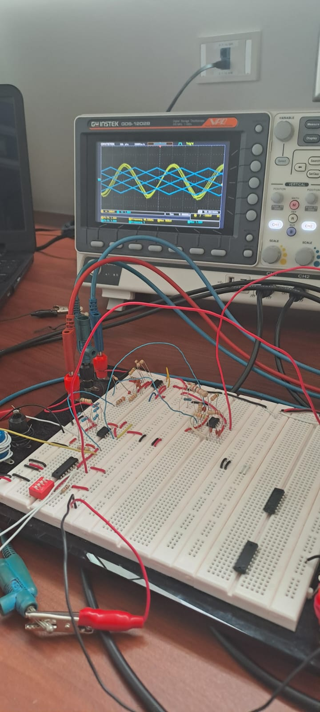
Signal combination and filtering
This consists in a mixer of signals from an triangular oscillator, senoidal oscillator and microphone. All signals are sumed then througt a set of active filters all signal were recovered. This was let a prototype step just tested on breadboard and simulated in Multisim.
Read Inform
Rusty game
My very first game and my very first use of Rust. This is a game when you run from a group of chaser slimes. A lot of features were never implement like damage from attacks or criteria of losing/winning. My objetive was mainly to learn basic core of rust.
View Code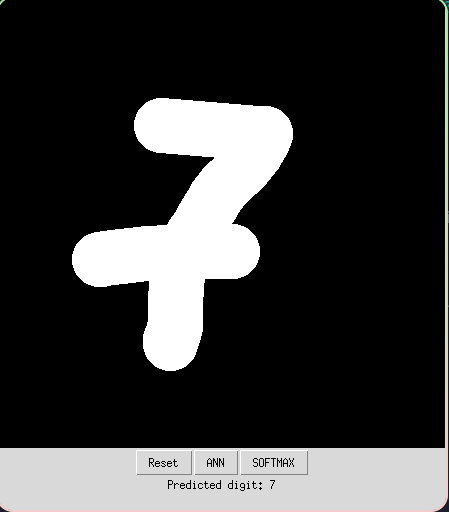
MNIST classificator
A comparative study of classification algorithms using MNIST dataset. Implementations for SVM, CNN, Softmax, KNN and RDF was developed in Python. Then a long study of features, data augmentation effect, hyperparamter effect, etc was executed to know the best algoruthm: The best classificator was CNN.
View Code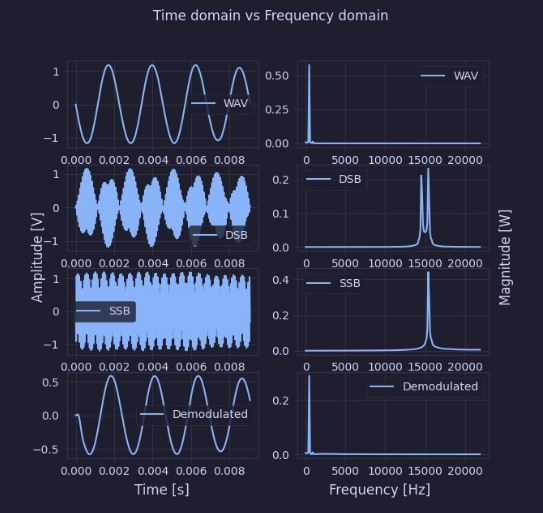
SSB Simulator
This is an app developed in Python to simulate amplitude modulated transitions of type Single Side Band (SSB) using Hilberth transform. The app receive an audio file .waw format and it shows results of input signal, double side band signal (DSB) and either SSB upper side or lower side in modulator and also the demodulated signal in demodulator. It also has ajustable parameter to show effect of frequency and phase error in demodulator as well as the effect of DC offset for full carrier modulation.
View Code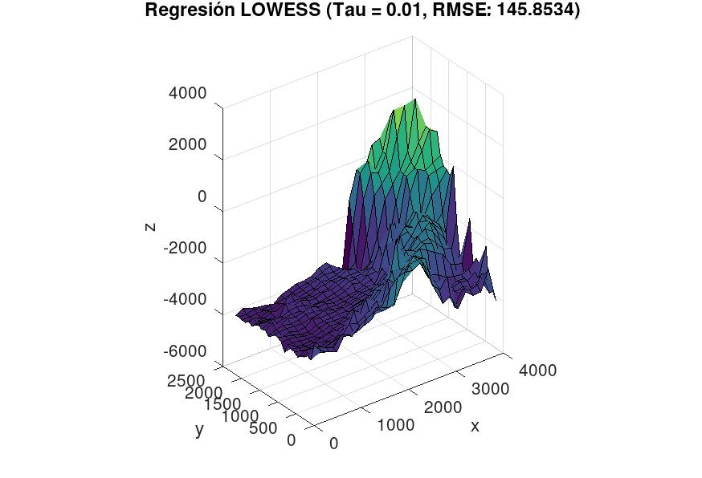
Costa Rica's seafloor depth stimation
Here a portion of Costa Rica seafloor depth was stimated using different approaches of regression models: Weigthed linear regression, linear regression, and polynomial regression algorithms coded in Octave/Matlab.
View Code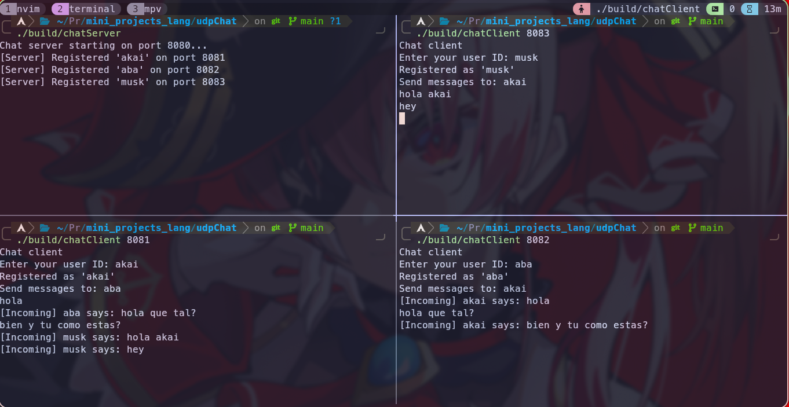
UDP Chat App
In this C++ project two versions of chat app example using UDP communication protocol are showcased (A P2P and Client-Server-Client version). While UDP is not good for this kind of applications since it is a connectionless protocol, so there is no guarantee that message is going to be received nor its order nor error correction; I consider it still instersting to know its features and drawbacks.
View Code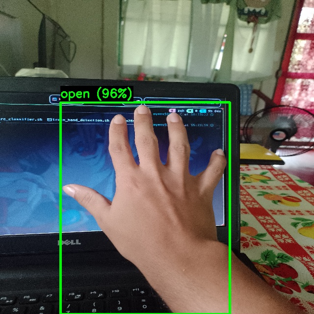
Gesture controller
A gesture classificator in C++ with YOLOv11. It does perform hand detection and gesture classification in camera or image and then it can send throught UART protocol a gesture classification ID to a STM32 blue pill wich encode it and shows it in LEDs. WARNING: I used very small dataset so it is very indead overfitted.
View Code
My dotfiles
I am a linux enthusiast, so I would like to share my dotfiles. I haven't updated them in a while so may be a lot of problems. It includes neovim, yazi, zsh, kitty, tmux, hyprland, waybar among others.
View Code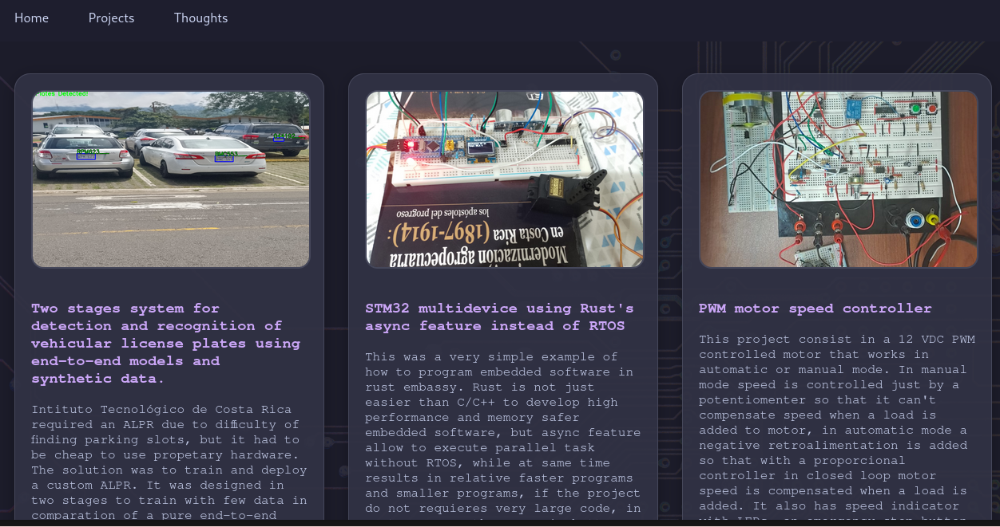
Web portafolio
This website. It uses Github pages for hosting since I don't have a domain nor hosting service. Github pages has the disadvantage that it only may host static websites.
View Code